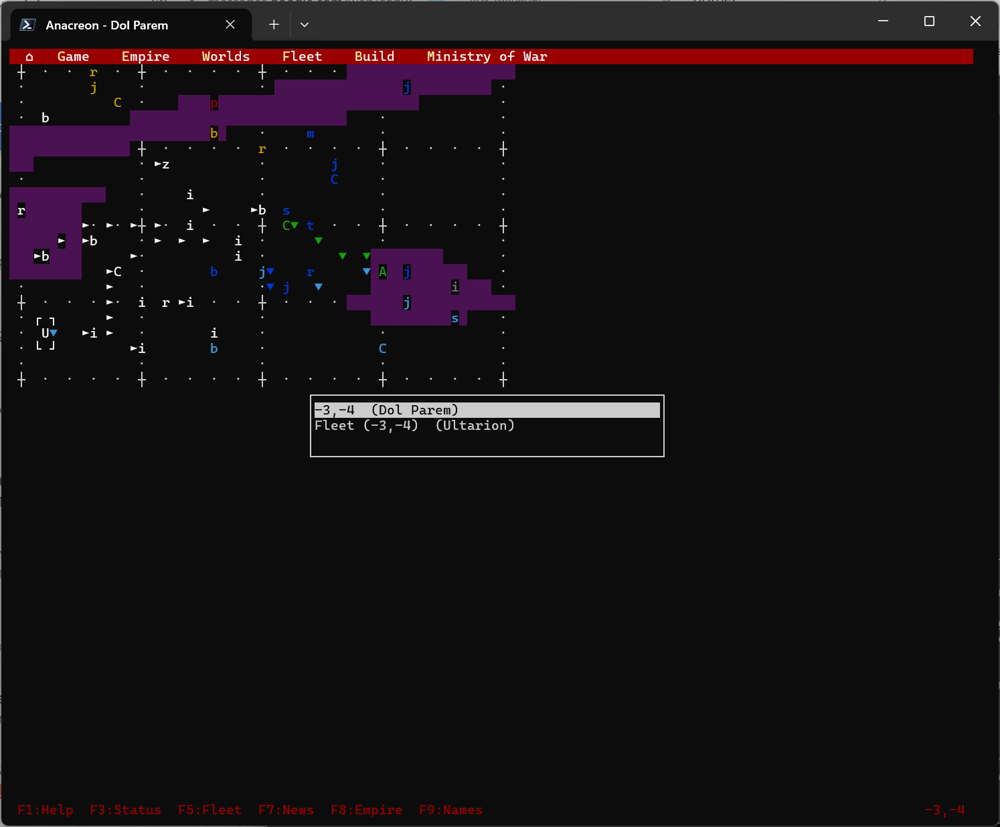
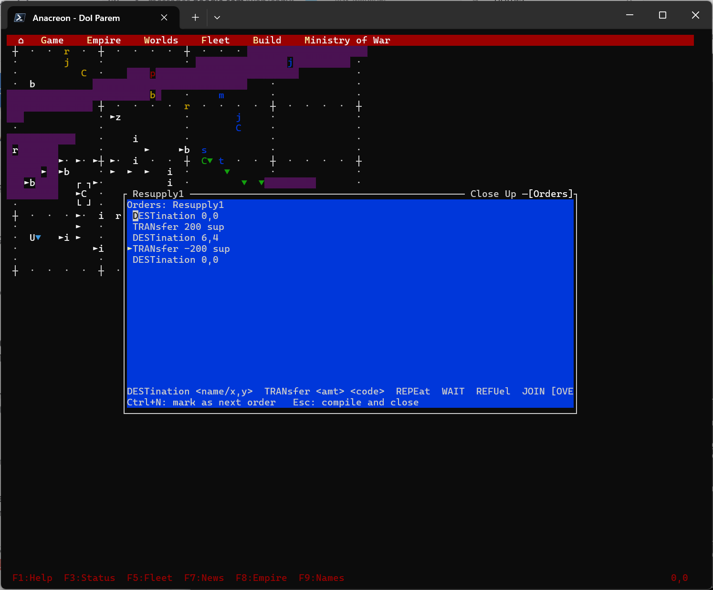
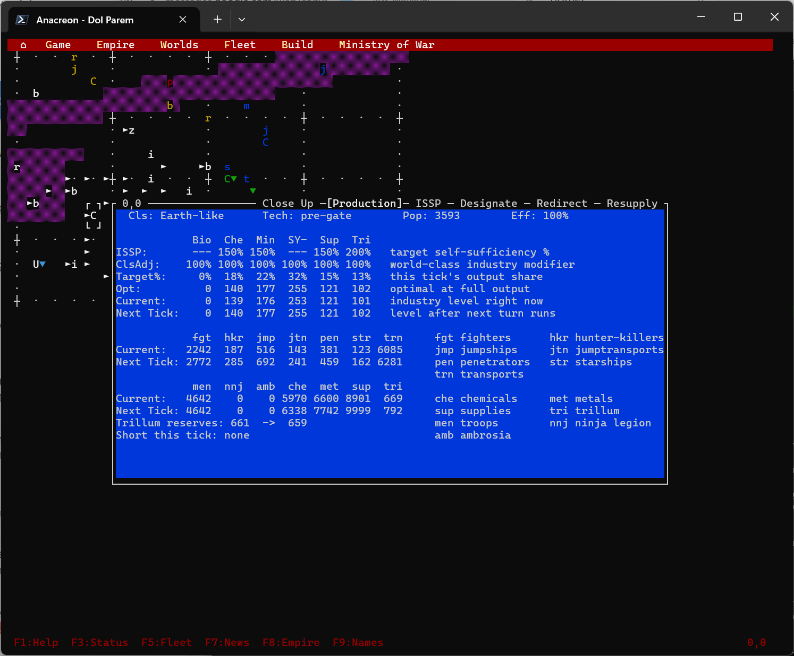
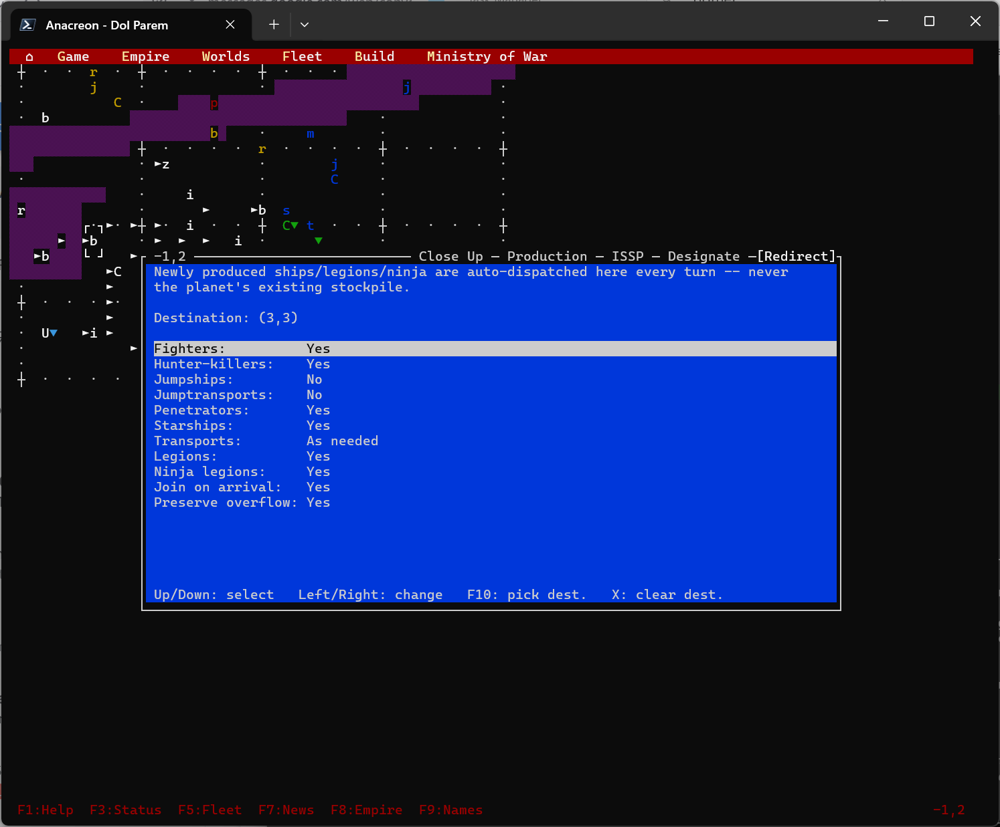
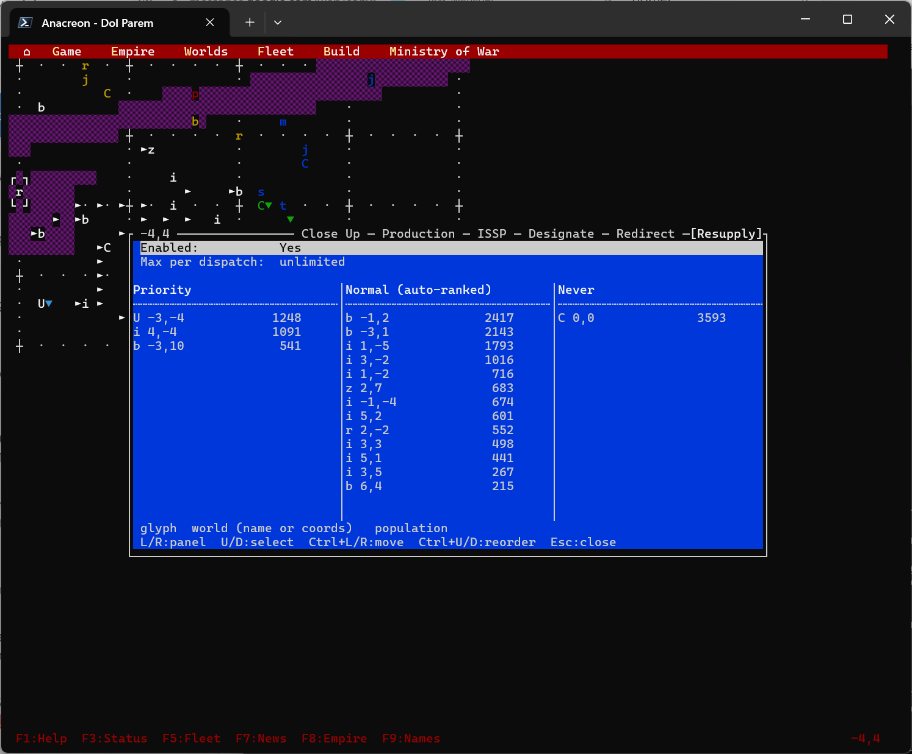

Production redirection
Send a planet's newly produced ships and cargo to a chosen destination automatically each turn, instead of dispatching every shipment by hand.
Not a port of everything
The core of Anacreon Reconstructed 4021 is a faithful rebuild of the 1988 DOS game — same economy, same combat, same AI. This page describes the parts that aren't a port of anything: systems and windows added to this reconstruction with no Pascal source behind them.
Send a planet's newly produced ships and cargo to a chosen destination automatically each turn, instead of dispatching every shipment by hand.
A fleet-order template: choose a fleet, a source world, a cargo type and amount, and a destination, and the game installs a one-shot pickup/deliver/return/refuel order sequence.
Built on the resupply mission above: mark raw-material worlds Priority, Normal, or Never, and worlds that come up short get resupplied from the right sources each turn, no manual orders required.
Queued fleet orders resolve on arrival and at the start of each turn, not only while you're actively taking that empire's turn.
The game saves itself at intervals as you play, separate from the manual save/load you control directly.
Games save to a JSON format built for this port. Original DOS .SAV files can still be loaded in.
Pressing / in the help screen searches across every help topic instead of paging through them in order.
Every save and autosave from one playthrough carries the same ID, so they can be correlated back to a single game later.
A location picker and a tabbed info/control window, with different tabs depending on what's selected and who owns it. Detailed below.
Feature detail
The original's Close Up command opened one fixed display for whatever was selected. This port replaces that with a picker for locations holding more than one object, feeding a tabbed window whose contents depend on what's selected and who owns it.
Moving the cursor onto a location and pressing Enter (or using Worlds > Close Up) opens that location's Close Up window directly if there's exactly one object there. If there are several — a fleet parked over a world, several fleets sharing a cell — a picker lists them first.

Close Up tab — always present. For a world: class, tech level,
population, efficiency, ambrosia addiction, revolution index, cargo, ships, troops, and
defenses, plus scenario flavor text once it's been scouted. For a fleet: position,
status, destination, range, ships, and cargo. Fields are redacted to ????
unless you own the object or have scouted it.
Orders tab — added only for a fleet you own. An editor for the fleet
order language (DESTination, TRANsfer, REPEat,
WAIT, REFUel, JOIN), with a marker for which
order runs next and inline compile-error feedback before anything commits. The original
had no way to mark a specific order as next-up.

Opens a larger window with up to six tabs, each a control surface rather than a read-only report:


